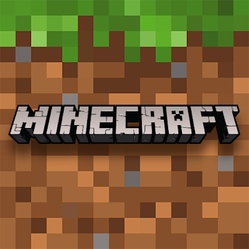

Minecraft
Ecosicraft Indice
Minecraft

Este es el texto de mi primer artuculo
Este es el texto de mi segundo articulo
¡Hola, mundo!
Esta es mi primera pagina web.
Minecraft.
Minecraft es un videojuego sandbox enfocado en permitirle al jugador explorar y modificar un mundo generado dinámicamente hecho de bloques de un metro cúbico. Es mantenido por Mojang Studios, que forma parte de Xbox Game Studios, que a su vez es parte de Microsoft.
Descripcion de Minecraft.
Desde su creación, Minecraft fue desarrollado casi exclusivamente por Notch hasta que Jens "Jeb" Bergensten comenzó a trabajar en él y desde entonces se ha convertido en el responsable de su desarrollo. Cuenta con música de Daniel "C418" Rosenfeld y de Lena Raine y cuadros de Kristoffer Zetterstrand. La versión inicial, conocida actualmente como Minecraft Classic, fue publicada el 17 de mayo de 2009. La versión completa del juego se publicó el 18 de noviembre de 2011. Desde su lanzamiento, Minecraft se ha ampliado a dispositivos móviles y consolas. El 6 de noviembre de 2014 Microsoft adquirió Minecraft y todos los activos de Mojang Studios por 2.500 millones de dólares estadounidenses.[2][3] Desde entonces, Notch dejó Mojang y ya no trabaja en Minecraft.
Minecraft se enfoca en permitirle al jugador explorar, interactuar con y modificar un mundo generado dinámicamente hecho de bloques de un metro cúbico. El entorno también contiene plantas, criaturas, y objetos. Algunas actividades en el juego incluyen minar por menas, pelear contra criaturas hostiles, y fabricar nuevos bloques y herramientas al obtener varios recursos encontrados en el juego. El modelo de abierto-cerrado del juego le permite a los jugadores crear estructuras, creaciones, y arte en varios servidores multijugador o sus mapas de un jugador. Otras características incluyen circuitos de redstone para mecanismos lógicos y acciones remotas, vagonetas y caminos, y un misterioso sub-mundo llamado el Nether. Una meta diseñada pero completamente opcional del juego es viajar a una dimensión llamada el End, y derrotar a la Enderdragón..